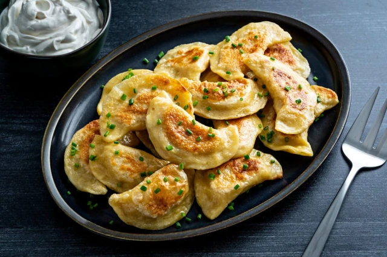
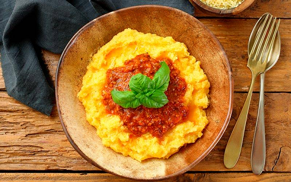
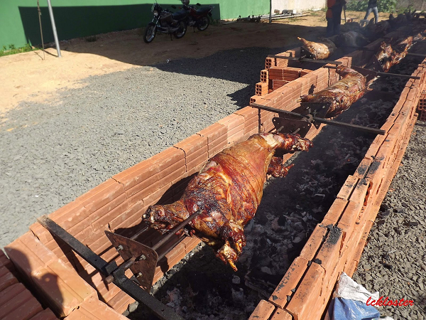

A gastronomia típica do Município de Irati são as comidas próprias da culinária eslava, como o pierogue, que é uma massa à base de farinha de trigo, água, sal e ovos, em formato de meia lua, semelhante a um pastel, com diversos recheios, como de batata com requeijão, arroz com requeijão, feijão, etc. estes podem ser comprados e encontrados em diversos pontos de vendas pela cidade, o produto é vendido congelado principalmente nos mercados, panificadora e fábricas na cidade.
Outros elementos da gastronomia seriam os pratos típicos italianos, com destaque para polenta, parte da identidade cultural italiana no que diz respeito à alimentação, pois ainda hoje é encontrado com frequência nas mesas das famílias de descendentes italianos. A polenta possui uma festa tradicional na localidade do Pinho de Baixo reduto de descendentes italianos em Irati.
Outro atrativo da gastronomia local é o borrego no rolete, feito com temperos especiais e assado no fogo de carvão, o borrego é prato que tem como base a carne de ovino até 12 meses de idade. É servido juntamente com pratos quentes e frios, destacando assim um conjunto de sabores especiais, que atrai apreciadores de todo o Brasil e fora dele. Este prato é servido normalmente em um evento que ocorre no mês de dezembro juntamente com a Festa do Pêssego, sendo uma das principais festividades da cidade.
